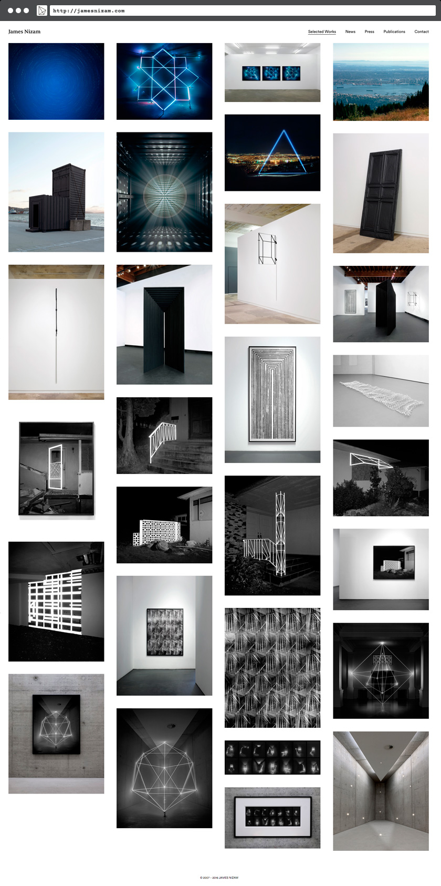
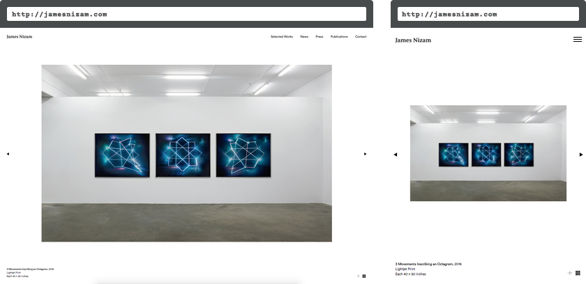
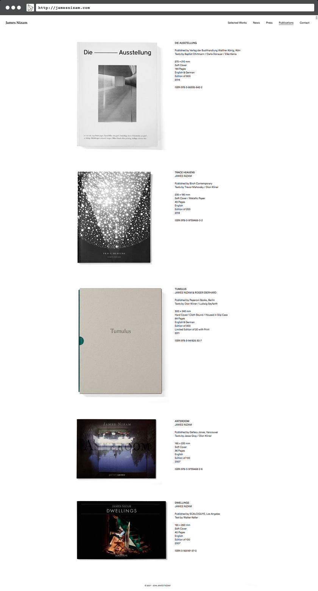

James Nizam
A portfolio site for photo-based artist James Nizam.
James Nizam approached tryles for a re-build of his WordPress-powered site that had been running strong since 2011. The site needed a more image-centric design to showcase his new work.
The new site features aggressive caching to enhance loading times for large images and a fluid grid view so that works are displayed as large as possible on all devices.
Single work images are maxed-out in size to fill up the screen width. Image descriptions and content are attached to the image for better back-end management.
And news items and publications lazy-load.
A custom icon-font is used throughout.
Conclusion
A clean and minimal site, this portfolio build lets the images and content take the foreground. Built with extensibility in mind, this site will prove useful for many years to come.